第3章 与数据打交道
金融数据以多种形式和大小规模存在。本书中，我们将主要关注特定类别的财务数据，即时间序列数据。时间序列数据包含一个时间成分，主要用作索引（键），来确定其他有意义的值。你也可以想象时间序列数据是一组键—值组合，其中键为时间，值为单一记录或一组记录。下表以苹果公司股票（AAPL）为例，展示了典型的日度时间序列数据长什么样子。.csv格式的原始数据下载于雅虎网站。
第一列为日期，其他列包含价格和成交量信息。现在我们把刚刚下载好的数据导入到R里。
数据导入
首先，我们扫一眼苹果公司股票日度收盘价数据。这里介绍一种简单的从表格获取数据到R环境的方法。打开.csv文件，复制收盘价一列，然后在R里输入下列命令：
# 在windows电脑中
aapl <- read.table("clipboard")
# 在Mac/Linux中
aapl <- read.table(pipe("pbpaste"))这样，剪贴板上的内容就被读入到一个名为aapl的变量。使用head()命令查看此变量的前几个记录。
head(aapl)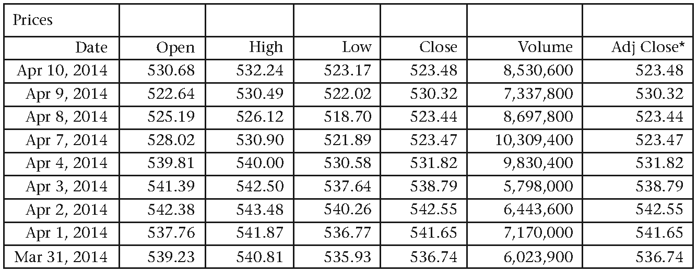
图3.1 苹果股价的时间序列
aapl是哪种类型的对象呢？它是一个矩阵？列表？数据框？
class(aapl)看来aapl对象实际上是一个数据框。我们也注意到，R还对提取的数据列提供了名称（V1）。进一步查看后，发现打印出的数据是倒序的。这可以通过将原始表格重新按顺序排列，或反转这个刚刚创建的aapl对象得到修复。这里给出实现后者的方法：
aapl <- aapl[rev(rownames(aapl)), , drop = FALSE]rev()命令像我们预期的那样反转了记录。这一句的语法有点令人犯晕。它其实是告诉R，反转数据框aapl的每行记录，并保留原来对象的结构。参数drop = FALSE避免数据框降级为向量。
为了提取和可视化价格的原始向量，我们进行下面操作：
prices <- aapl$V1
plot(prices, main = "AAPL plot", type = 'l')函数read.table()和read.csv()有很多可选参数，使得读入数据变得轻而易举。除了复制收盘价数据列搭配“clipboard”命令，我们还可以选择指明待分析的数据文件的存放路径进行读物。敲入?read.csv命令查看可供使用的所有参数。
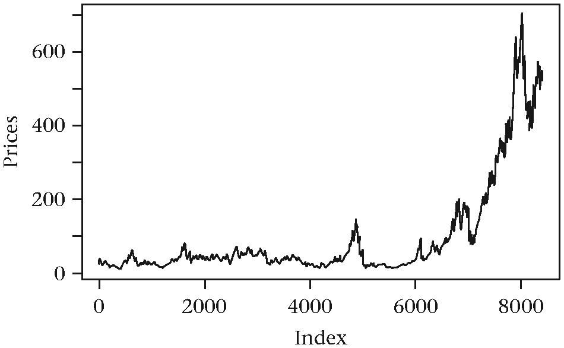
图3.2 简单股票曲线图
# 加载.csv 文件
aapl_2 <- read.csv(file = "Chapter_03/aapl.csv", header = TRUE, stringsAsFactors = FALSE)
# 倒转行元素
aapl_2 <- aapl_2[rev(rownames(aapl_2)), ]这一次，通过指出输入文件中的第一行为表头，R会通过变量名提取出每一列，如果我们想要提取收盘价，，可以键入如下代码：
aapl_close <- aapl_2[, "Close"]我们用函数summary()快速得到表格形式的汇总统计量。
summary(aapl_close)函数summary()生成均值、中位数、第一、第三分位数，以及缺失值（NA）信息。面对新的数据集，汇总和可视化总是分析前的一个步骤。很多时候，汇总统计量就能帮助发现数据的结构性问题。
R包安装
大多数你关心的功能很可能已经被别人开发成了函数。在R社区里，利用他人的劳动成果会受到鼓励。如果某个功能函数已经存在而且运行良好，就没有必要重复造轮子。包或者库是指捆绑在一起的函数（通常为R，C++，C或Fortran代码）、数据和关于一个主题的支持文档。特定主题的列表详见CRAN Task Views网站：cran.r-project.org/web/views/。一些组织机构也会写供内部使用而不外传的R包。如果想了解如何编写自己的R包，下面这些参考信息提供了不错的入门资料。
我们待会儿要用的包叫quantmod，作者为Jeffrey Ryan，它可以方便我们直观地操作金融时间序列数据。
安装quantmod时，首先打开R控制台，输入下面命令：install.packages("quantmod")。注意包名字两侧的引号。函数install.packages() 的全部参数如下：
install.packages(pkgs, lib, repos = getOption("repos"),
contriburl = contrib.url(repos, type),
method, available = NULL, destdir = NULL,
dependencies = NA, type = getOption("pkgType"),
configure.args = getOption("configure.args"),
configure.vars = getOption("configure.vars"),
clean = FALSE, Ncpus = getOption("Ncpus", 1L),
verbose = getOption("verbose"),
libs_only = FALSE, INSTALL_opts, quiet = FALSE,
keep_outputs = FALSE, ...)安装过程中，quantmod自动载入它依赖的包。如果和互联网连接，R会把下载的包存放在某个默认文件夹中。该文件夹位置可以通过lib参数指定。
安装是一回事，加载使用则是另一回事。安装只发生一次，但加载在每次调用脚本时就会发生。函数library()或require() 可以将程序包载入R环境。大部分时候它们没什么差别。
数据储藏和传输
着手分析前，我们必须明白怎样高效地储存和索取数据。有很多种方式完成两种目标。就存储而言，一些常用的媒介形式有：
- 逗号分隔文件（.csv）
- Excel表格（.xls或.xlsx）
- 关系型数据库
剩下就不展开了。掌握上面几种格式的文件存取，对于90%我们感兴趣的任务已经绰绰有余。
而说到在电脑间传输（也涉及储存）文件，.json数据格式非常流行。 JSON是Javascript Object Notation的字母缩写，它使用人类易读的键-值范式来储存信息。
一个简单的.json文件可能长这样：
{
"CVX":
{
"Currency": "USD",
"Sector": "Basic Materials",
"Industry": "Major Integrated Oil & Gas"
},
"GOOG":
{
"Currency": "USD",
"Sector": "Technology",
"Industry": "Internet Information Providers"
}
}该文件被存放在本地，然后通过RJSONIO包解析成list对象。
# 安装和加载所需包
install.packages("RJSONIO")
library(RJSONIO)
# 读取数据文件
out <- fromJSON(content = "path/sample_json_file.json" )
# 检视结果对象的结构str(out)
## List of 2
## $ CVX : Named chr [1:3] "USD" "Basic Materials...
## ..- attr(*, "names")= chr [1:3] "Currency"...
## $ GOOG: Named chr [1:3] "USD" "Technology"...
## ..- attr(*, "names")= chr [1:3] "Currency"...另一种可以编码，以及在不同应用间传输的好用格式是XML（Extensible Markup Language）。YAML是第三种选择。YAML是YAML Ain’t Markup Language的递归缩写。这些格式的思路大体相似，都采取肉眼可读的数据编码形式。解析XML和YAML文件的R包分别叫XML和 yaml。
将数据保存为.rdata或.rds可以获得压缩格式的文件。在R中，这可以通过save()和saveRDS()命令来完成。二者将底层数据对象转换为二进制（binary）格式。相应地，可以通过load()和readRDS()命令将压缩文件加载回到R环境中。实际上，用于文件名的后缀可以是任意的。使用.rdata和.rds的只是为了清晰显示和遵从惯例。
为方便比较，我们将之前从雅虎（Yahoo）读取的苹果股票数据保存为.csv文件并查询其大小。
write.csv(aapl_2, file = "path/aapl_2.csv")该文件在磁盘上为455 KB。
save(aapl_2, file = "path/aapl_2.rdata")通过将原始数据框保存为二进制对象，该文件现在只有164KB大小。压缩前大概是压缩后的2.5倍。为了验证压缩不改变数据对象本身，我们可以将保存的版本加载回内存并与.csv版本进行比较。由于save()命令将所有内容都载入主环境，我们将不得不重新命名旧文件，以免覆盖它。saveRDS()可以达到同样效果。将旧对象赋予一个新的变量，并删除旧变量。
aapl_old <- aapl_2
rm(aapl_2)
load(file = "path/aapl_2.rdata")identical()命令用于检查对象是否一致。
identical(aapl_old, aapl_2)
## [1] TRUE我们应当尽可能地使用这些二进制R对象。这里的妥协是不同语言框架之间数据的可移植性。许多应用程序已经使用.csv和.json格式。但是，只有R用户，使用R序列化文件。
从表单提取数据
表格在金融领域随处可见。交易员、会计师、宽客以及其他各类专业人员依靠表格来管理金融工具组合，跟踪会计指标并进行量化分析。
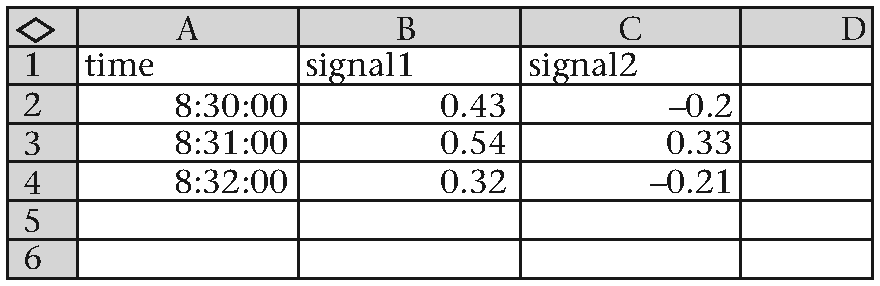
图3.3 表单signals示例
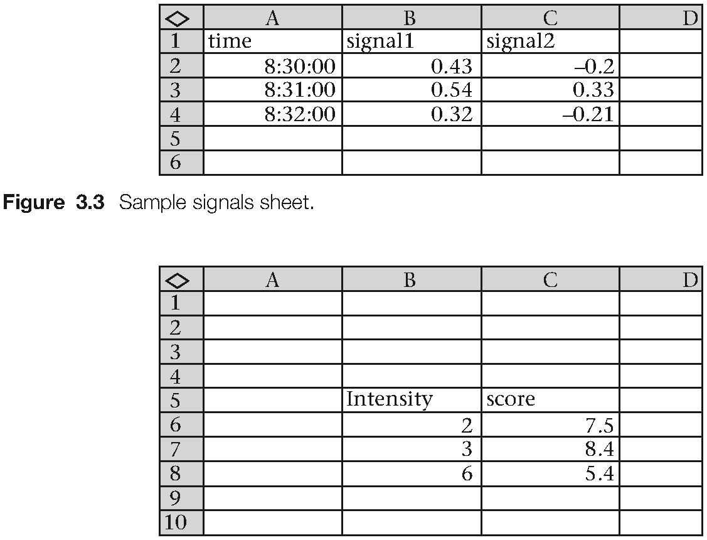
图3.4 表单strength示例
XLConnect包提供了不依赖平台的Excel的接口是我们能够将数据读入成熟悉的R数据框[33]。根据开发者网站的介绍http://www.mirai-solutions.com/，XLConnect包完全免费，无需任何注册或其他附加条件。你甚至不需要为了使用包里的函数而专门安装Microsoft Excel。只需要安装最新版本的Java运行环境（JRE）。为了描述该包的功能，我们使用一个.xlsx工作簿，内有2个工作表。第一张表名为signals，第二张为strength。工作簿命名为strategy.xlsx。
library(XLConnect)
# 创建一个工作簿对象
book <- loadWorkbook("Chapter_03/strategy.xlsx")
# 将其转换成数据框格式
signals <- readWorksheet(book, sheet = "signals", header = TRUE)
signals
## time signal1 signal2
## 1 08:30:00 0.43 -0.20
## 2 08:31:00 0.54 0.33
## 3 08:32:00 0.32 -0.21
strength <- readWorksheet(book, sheet = "strength", header = TRUE)
strength
## intensity score
## 1 2 7.5
## 2 3 8.4
## 3 6 5.4也可以创建一个工作簿，用R导入数据。
# 创建一个新的工作表
book <- loadWorkbook("demo_sheet.xlsx", create = TRUE)
# 创建一个名为stock1的工作表
createSheet(book, name = "stock1")
# 创建一个名为stock2的工作表C
createSheet(book, name = "stock2")
# 将数据载入工作簿
df <- data.frame(a = c(1, 2, 3), b = c(4, 5, 6))
writeWorksheet (book, data=df, sheet="stock1", header = TRUE)
# 保存该工作簿
saveWorkbook(book, file = "Chapter_03/demo_sheet.xlsx")如果想了解更多关于如何在R中操作Excel文件，可以详读Nicola Sturaro Sommacal的博客文章http://www.r-bloggers.com/read-excel-files-from-r/。
数据库登录
交易员或宽客时不时需要与数据库打交道，不是提取就是存入数据。数据库，尤其与金融和交易相关的，大部分本质上为关系型。近年来崛起的数据库还有NoSQL系列。有一些R函数，可以登录关系型和NoSQL型的数据库。数据库是一种存储介质，为快速、可扩展的存储和检索数据提供额外的功能。许多数据库都有特定的查询语句。SQL是其中一例。SQL是结构化查询语言的简称。SQL形式的数据库形式多样。表3.1中列出了一些常用的。
表3.1 主要关系型数据库
| Oracle | www.oracle.com/database |
|---|---|
| MySQL | www.mysql.com |
| Microsoft SQL Server | www.microsoft.com/sql-server |
| PostgreSQL | www.postgresql.com |
| Microsoft Access | www.office.microsoft.com/en-us/access |
| DB2 | www.ibm.com/software/data/db2 |
下面一个例子中，我们从MySQL数据库中提取数据。构造和填充一个数据库不在本书讨论范围。注释8解释了怎样着手设置一个数据库。本例假设一个MySQL数据库已经存在，而且已经存有数据。
我们会探讨三种在R里登录MySQL数据的方式。第一种方法使用RODBC包，第二种用RMySQL包，第三种探索使用dplyr包。
RODBC包是开放式数据库连接（ODBC）编程界面的一个R接口。界面允许第三方应用通过SQL调用，与关系型数据库无缝连接和操纵数据。在Windows平台上，在ODBC数据源管理器菜单上设定注册数据源名字。一旦安装MySQL驱动，确定名字，我们可以使用命令odbcConnect()来建立MySQL数据库实例的一个连接。一个 MySQL实例可以由多个数据库组成，每个相应地有一个或以上表格。表中每行可视为单独的一个记录。这样的表中的每一列称为一个字段。我用作示范的数据库名为OptionsData，它包括一个叫做ATMVolatilities的表格。该表中包括几只股票的虚拟的隐含波动率估计。表中的字段是期权代号，期权到期日，离到期日的天数，期权的delta值（不区分看涨或看跌期权），以及每一个期权的隐含波动率值。
# 加载RODBC 包
require(RODBC)
# 创建一个MySQL连接
con <- odbcConnect("rfortraders")
# 选择数据库和数据表名称
database_name <- "OptionsData"
table_name <- "ATMVolatilities"
symbol <- "SPY"
sql_command <- paste0("SELECT Symbol, Date, Maturity,
Delta, CallPut, ImpliedVolatility
FROM ", database_name, ".", table_name,
" WHERE Maturity = 91
AND Symbol IN ('", symbol, "');")
iv <- sqlQuery(con, sql_command)
# 断开与数据库的连接
odbcClose(con)上面的SQL查询提取出了任意一段时间内，SPY和ETF的91天到期期权隐含波动率。输出结果大致如下：
head(iv)
## Symbol Date Maturity Delta CallPut ImpliedVolatility
## SPY 6/9/2014 91 55 C 0.115925
## SPY 6/9/2014 91 60 C 0.119577
## SPY 6/9/2014 91 65 C 0.123468
## SPY 6/9/2014 91 70 C 0.127629
## SPY 6/9/2014 91 75 C 0.132094
## SPY 6/9/2014 91 80 C 0.136776RMySQL包的功能与RODBC类似，却只服务MySQL数据库。比起RODBC，许多使用MySQL的从业者更青睐RMySQL。下面一段代码，建立本机实例的一个连接，将数据提取到数据框格式，然后关闭连接：
# 载入必要的包
require(RMySQL)
# 建立一个连接
con <- dbConnect(MySQL(), user="your_login",
password="your_password",
dbname="OptionsData",
host="location_of_database")
# 列出其中表和字段
dbListTables(con)
# 定义查询命令提取数据
sql_command <- paste0("SELECT Symbol, Date, Maturity,
Delta, CallPut, ImpliedVolatility FROM ",
database_name, ".", table_name,
" WHERE Maturity = 91
AND Symbol IN ('", symbol, "');")
result <- dbGetQuery(con, sql_command)
# 关闭连接
dbDisconnect(con)如果数据量太大，也可以分段分块地提取表。
results <- dbSendQuery(con, sql_command)
partial_results <- fetch(results, n = 100)dplyr包
dplyr 包是 Hadley Wickham 和Romain Francois的另一个贡献[45，44]。它由上一代的plyr 包进化而来，plyr也非常受欢迎。最新的 dplyr提供处理R数据框的有效方法。名称中的d代表数据框。dplyr 的开发凝结了大量的思考，大多数运行比较耗时的代码成分都直接由C++实现。（我）希望看到 R 用户迁移到dplyr完成各种各样的数据操作任务。该包源代码目前托管在 github上︰https://github.com/hadley/dplyr。下载CRAN版本或 github上的最新开发版本来安装dplyr均可︰
# 获取CRAN版本
install.packages("dplyr")
require(dplyr)
# 或者先加载devtools包
install.packages("devtools")
require(devtools)
# 再获取 github版本
devtools::install_github("hadley/dplyr")
require(dplyr)Hadley建议，dplyr包的用户应该先熟悉整理数据（tidy data）的相关原则，再去深入dplyr开始严肃的数据工作。相关信息可以在这里找到︰ http://vita.had.co.nz/papers/tidy-data.pdf
根据 github上的发布说明，下面是一些 dplyr 目前支持的格式：
- 数据框
- 数据表格
- SQLite
- PostgreSQL/Redshift
- MySQL/MariaDB
- Bigquery
- MonetDB
- 多维数据集
dplyr实现的精妙之处于，用户免于了解繁琐的底层数据容器的细节。tbl()结构作为表格替代物 ，将数据从上述库中提取出来。
下面是处理dplyr时应熟知的一些重要命令︰
- tbl()
- group by()
- summarise()
- do()
- %>%
下面的例子中，我们将关注一些核心函数，使用的数据集与dplyr包同步安装（译者注：最新的dplyr包改为建议安装另一航线数据集成的包nycflights13）。完整示例请参考： https://github.com/hadley/dplyr.
# 加载dplyr相关的航线数据集hflights
library(hflights)
# 检查行数和列数
dim(hflights)
## [1] 227496 21数据框的一行记录就像下面这样：
library(dplyr)
library(knitr)
library(hflights)
hflights %>%
head(1) %>%
t() %>%
kable()现在我们想要做的是，计算这个数据集某一子集的汇总统计量。第一步，将数据强制转换成 data.table[72]。也可以将之转化为一个数据框。（译者注：tbl_dt函数已经被Hadley转移到新的dtplyr包，该包致力于让用户通过dplyr语法对data.table对象进行操作。）
# 首先，将数据强制转换成data.table
flights_dt <- dtplyr::tbl_dt(hflights)
# 该对象的类型是什么？
class(flights_dt)
## [1] "tbl_dt" "tbl" "data.table" "data.frame"要查找所有航空公司航班到达延误时间的中位数，我们先按航空公司对数据进行分组︰
表3.2 dplyr的数据行示例
| Sample hflights row | |
|---|---|
| Year | 2011 |
| Month | 1 |
| DayOfMonth | 2 |
| DayOfWeek | 7 |
| DepTime | 1401 |
| ArrTime | 1500 |
| UniqueCarrier | AA |
| FlightNum | 428 |
| TailNum | N576AA |
| ActualElapsedTime | 60 |
| AirTime | 40 |
| AirDelay | −10 |
| DepDelay | 0 |
| Origin | IAH |
| Dest | DFW |
| Distance | 224 |
| TaxiIn | 7 |
| TaxiOut | 13 |
| Cancelled | 0 |
| CancellationCode | 0 |
| Diverted | 0 |
# 按照航空公司分组
carrier_group <- group_by(flights_dt, UniqueCarrier)
# 现在计算汇总统计量
summarise(carrier_group, avg_delay = mean(ArrDelay, na.rm = TRUE))汇总统计的执行时间为十毫秒。确实很快。表3.2给出了统计量大致情况。
do() 函数允许将任意函数应用于分组后的数据。%>% 管道运算符用于串联运算结果。关于此功能的例子可以通过在控制台中输入?do查阅到。
我衷心推荐有抱负的数据分析师掌握dplyr这个工具，它应该成为在R中进行任何数据整理和数据分析工作流的一部分但是，你需要花时间精力去熟悉整洁数据（tidy data）的范式，我认为这个任务的难度尚属中级，因此，我将光辉灿烂的dplyr 的更多细节留给读者自己去探索发现。
表3.3 dplyr中summarise的输出结果示例
| UniqueCarrier | Mean Delay |
|---|---|
| AA | 0.89 |
| AS | 3.19 |
| B6 | 9.85 |
| CO | 6.09 |
| DL | 6.08 |
| EV | 7.25 |
| F9 | 7.66 |
| FL | 1.85 |
| MQ | 7.15 |
| OO | 8.69 |
| UA | 10.46 |
| US | −0.63 |
| WN | 7.58 |
| XE | 8.18 |
| YV | 4.01 |
使用xts包
在这一章的开始，我们了解了苹果公司的股票价格轨迹。数据下载自雅虎网，以.csv文件格式保存并读入R。生成的图象相当粗糙，除了线图，它没有包含任何有用信息，例如，在 x 轴 上的时间或股票交易者可能 感兴趣的其他度量。
本章的目标之一，是从网站自动抓取金融时间序列，并制作更好（信息量更大）的图表。quantmod 包可以完成包括以上功能的诸多任务。
quantmod 的依赖包之一是 xts [49]。这个包提供用于处理时间数据的函数。xts最值得了解的一点是它结合核心数据和时间索引来创建一个新的对象，进而你可以基于索引执行查询和对底层数据进行转换，因此非常趁手。
xts 的文档相当翔实。帮助页面上的示例通常对了解可用功能很有帮助。
# 加载xts包
library(xts)
# 加载xts自带的一个小数据集
# 我们也可以使用我们自己的.csv文件
data(sample_matrix)
# 检查数据
head(sample_matrix)
## Open High Low Close
## 2007-01-02 50.03978 50.11778 49.95041 50.11778
## 2007-01-03 50.23050 50.42188 50.23050 50.39767
## 2007-01-04 50.42096 50.42096 50.26414 50.33236
## 2007-01-05 50.37347 50.37347 50.22103 50.33459
## 2007-01-06 50.24433 50.24433 50.11121 50.18112
## 2007-01-07 50.13211 50.21561 49.99185 49.99185
# 该数据对象的类型是？
class(sample_matrix)
## [1] "matrix"
# 使用str() 命令得到关于该数据对象的更多细节
str(sample_matrix)
## num [1:180, 1:4] 50 50.2 50.4 50.4 50.2 ...
## - attr(*, "dimnames")=List of 2
## ..$ : chr [1:180] "2007-01-02" "2007-01-03"
## "2007-01-04" "2007-01-05" ...
## ..$ : chr [1:4] "Open" "High" "Low" "Close"str() 的输出结果可能有点让人凌乱。它告诉我们该矩阵有 180 行和 4列。它还显示行名称等于日期，列名称等于字符串:"Open"、"high"、"Low"，和"Close"。我们可以接受该数据并将其转换成 xts 对象。对用户而言，所有的一切都会看起来和以前一样。然而，R在底层做着清洁整理索引的工作。
xts_matrix <- as.xts(sample_matrix, descr ='my new xts object')在声明xts对象时，descr（描述）并不是必须的，它只是一个可选参数。再一次对 xts_matrix使用 str() 命令。
str(xts_matrix)
## An 'xts' object on 2007-01-02/2007-06-30 containing:
## Data: num [1:180, 1:4] 50 50.2 50.4 50.4 50.2 ...
## - attr(*, "dimnames")=List of 2
## ..$ : NULL
## ..$ : chr [1:4] "Open" "High" "Low" "Close"
## Indexed by objects of class: [POSIXct,POSIXt] TZ:
## xts Attributes:
## List of 3
## $ tclass: chr [1:2] "POSIXct" "POSIXt"
## $tzone:chr""
## $ descr : chr "my new xts object"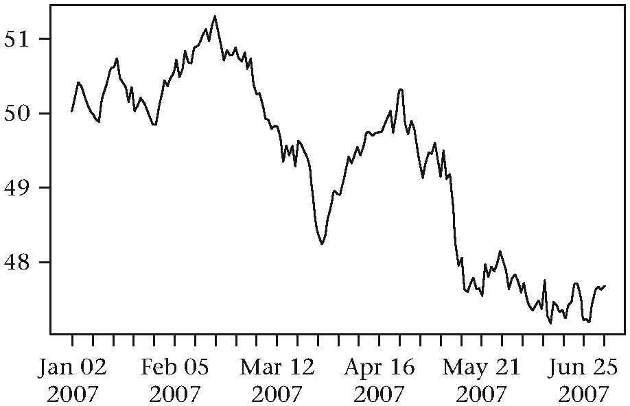
图3.5 第一幅xts图
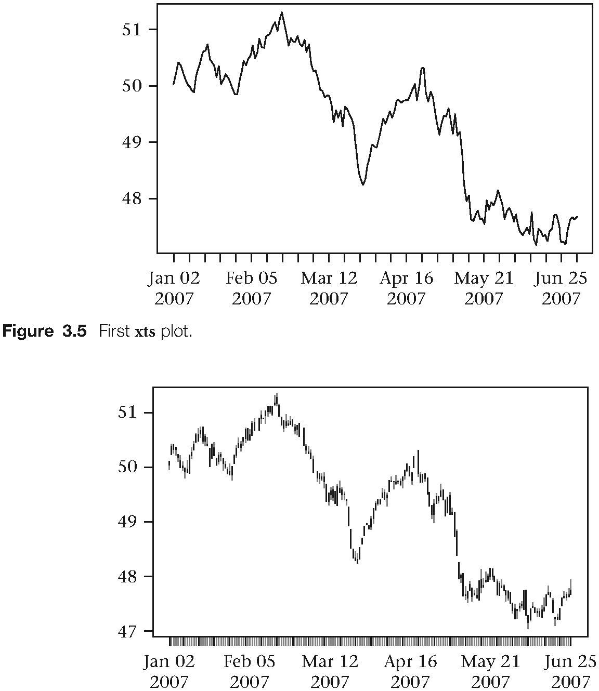
图3.6 xts的K线图
信息的差异显现出来了。行名已经被POSIX10时间集[132]替代。class(xts matrix)命令揭示了，我们对象的一些属性也继承自zoo类。
这里给出一个绘图的例子。plot()函数知道它现在处理xts输入对象，所以，会产生不同的图形布局。这就是多态11在作用。
# 简单时间序列图
plot(xts_matrix[,1], main = "Our first xts plot",
cex.main = 0.8)
# 或者我们尝试一些更花哨的图
plot(xts_matrix, main = "Candle plot on xts object",
cex.main = 0.8, type = "candles")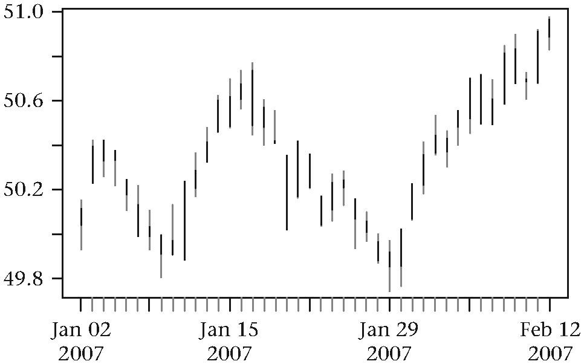
图3.7 绘制xts子集图
我们想要把时间序列转换为xts对象的主要原因是为了便于利用索引这一特性。那么，如何绘制两个日期之间的股票价格呢？
这里有一些示例︰
plot(xts_matrix["2007-01-01::2007-02-12"],
main = "An xts candle plot with subsetting",
cex.main = 0.8, type = "candles")注意传递给价格矩阵的单一字符串参数。这种时间格式的便利在于，上下界限采用肉眼可读的日期。
range <- "2007-03-15::2007-06-15"
plot(xts_matrix(range))paste() 函数用于连接字符串。它将输入的参数值粘贴在一起。默认情况下，它将用空格分隔字符串，除非指定sep =""。
start_date <- "2007-05-05"
end_date <- "2007-12-31"
plot(xts_matrix[paste(start_date, "::",
end_date, sep = "")])
# 默认使用空格连接符
paste("Hello", "World", "in R")
## [1] "Hello World in R"
paste("Hello", "Again", sep = "**")
## [1] "Hello**Again"指定的运算符号可以将字符串向量的各个元素首尾连接。
paste(c(1,2,3,4,5), collapse = "oooo")
## [1] "1oooo2oooo3oooo4oooo5"我们需要深入研究xts对象更多方面的细节，才可以进行一些有趣的时间序列分析。通常会出现的一个问题是的时间戳格式。尤其是，xts怎么知道一个任意的字符串表示什么时间？在前面的示例之一，我们使用as.xts()函数将一个矩阵转换为xts对象。该函数知道行名称用作时间指标，它也明白，2007-01-04意思是yyyy-mm-dd （四位数年-两位数月份-两位数日期）。
要是提供的时间戳形式为04012007或01-04-2007或者甚至2007/01/04呢？在大多数情况下，用户必须明确指定时间索引的具体格式。 下面的例子说明这个观点：
# 编造一个包含10个股票以及以微秒为单位的时间索引信息的价格向量
price_vector <- c(101.02, 101.03, 101.03, 101.04, 101.05,
101.03, 101.02, 101.01, 101.00, 100.99)
dates <- c("03/12/2013 08:00:00.532123",
"03/12/2013 08:00:01.982333",
"03/12/2013 08:00:01.650321",
"03/12/2013 08:00:02.402321",
"03/12/2013 08:00:02.540432",
"03/12/2013 08:00:03.004554",
"03/12/2013 08:00:03.900213",
"03/12/2013 08:00:04.050323",
"03/12/2013 08:00:04.430345",
"03/12/2013 08:00:05.700123")
# 允许R控制台显示到微秒级别options(digits.secs = 6)
# 创建经过正确格式化的时间索引
time_index <- strptime(dates, format = "%d/%m/%Y %H:%M:%OS")
# 将时间索引值传递给数据对象
xts_price_vector <- xts(price_vector, time_index)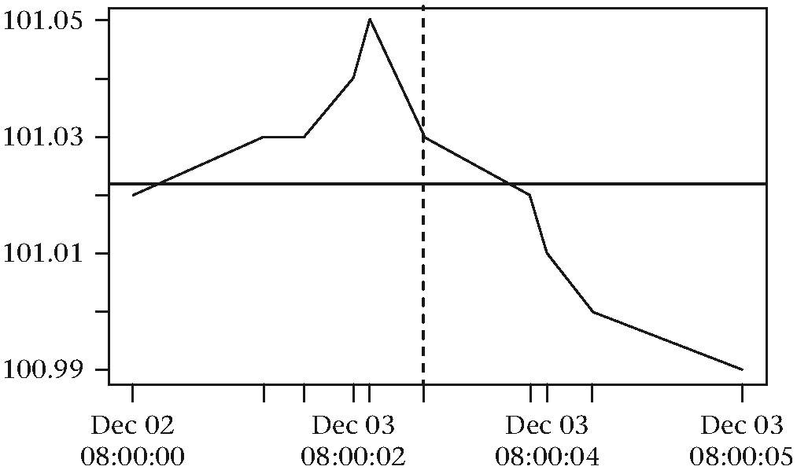
图3.8 xts图与直线
options(digits.secs)命令控制秒数打印在屏幕上的最大位数。它确保当在控制台引用xts_price_vector时，时间戳中的微秒位能够露脸。
strptime() 函数接受一个字符串或含多个字符串的向量作为输入，并将它们转换成指定的格式。须牢记，指定的时间戳具有微秒级的分辨率。因此，在时间格式的末尾我们指定%OS符号而非%S（秒）。关于?strptime的文档包括格式的详细信息。
给定完全有效的xts时间序列对象，我们不仅可以画出它本身，还可以添加一些纵向和横向的线，就像我们以前做过的。垂直的线现在可按时间戳索引。有关垂直的线，唯一棘手的部分是我们需要确定时间戳是哪种格式。这可以通过.POSIXct() 函数完成。
# 绘制编造股票价格数据图
plot(xts_price_vector, main = "Fictitious price series",
cex.main = 0.8)
# 添加一个表示均值的横线
abline(h = mean(xts_price_vector), lwd = 2)
# 添加标识一个特定时间戳的竖线
my_time <- as.POSIXct("03/12/2013 08:00:03.004554",
format = "%d/%m/%Y %H:%M:%OS")
abline(v = my_time, lwd = 2, lty = 2)那么，POSIXct是个什么东西呢？它提供一个封装，将日期时间对象转换为前面提到的POSIX格式。R里还有不少包可以帮助构造日期和时间12。
若要提取价格向量的数据部件，我们可以使用coredata()命令。下面的示例中，我们直接操作时间索引。为了更好的示范本例，我们将创建一个非齐次时间序列。时间的非齐次性在实践中很常见。重要事件之间往往存在不规则的时间隔。举例来说，在指定的时间间隔内，S&P 500 E-mini(ES)期货合约交易的一个子集。它可能看起来像这样：
es_price <- c(1700.00, 1700.25, 1700.50, 1700.00, 1700.75,
1701.25, 1701.25, 1701.25, 1700.75, 1700.50)
es_time <- c("09/12/2013 08:00:00.532123",
"09/12/2013 08:00:01.982333",
"09/12/2013 08:00:05.650321",
"09/12/2013 08:10:02.402321",
"09/12/2013 08:12:02.540432",
"09/12/2013 08:12:03.004554",
"09/12/2013 08:14:03.900213",
"09/12/2013 08:15:07.090323",
"09/12/2013 08:16:04.430345",
"09/12/2013 08:18:05.700123")
# 创建一个xts时间序列对象
xts_es <- xts(es_price, as.POSIXct(es_time,
format = "%d/%m/%Y %H:%M:%OS"))
names(xts_es) <- c("price")关于高频交易的一个我们感兴趣的量度是交易订单的抵达率。可以通过看行业的连续时间戳差异探讨此度量。difftime()函数计算两个日期时间对象之间的时间差异。本例明确地设置时间单位为秒。默认设置正好也是秒。
time_diff <- difftime(index(xts_es)[2], index(xts_es)[1],
units = "secs")
time_diff
## Time difference of 1.45021 secs我们可以创建一个经过所有数对的循环，然后将结果存储于一个向量。
diffs <- c()
for(i in 2:length(index(xts_es))) {
diffs[i] <- difftime(index(xts_es)[i], index(xts_es)[i - 1],
units = "secs")
}这当然能得到我们想要的结果，但不是最优方法。下面是向量化的解决方案：
diffs <- index(xts_es)[-1] - index(xts_es)[-length(index(xts_es))]
diffs
## Time differences in secs
## [1] 1.4502099 3.6679881 596.7520001
## [4] 120.1381109 0.4641221 120.8956590
## [7] 63.1901100 57.3400221 121.2697780
## attr(,"tzone")
class(diffs)
## [1] "difftime"上面代码可以被进一步优化，只调用index()函数一次，而非三次。
es_times <- index(xts_es)
diffs <- es_times[-1] - es_times[-length(es_times)]
diffs
## Time differences in secs
## [1] 1.4502099 3.6679881 596.7520001
## [4] 120.1381109 0.4641221 120.8956590
## [7] 63.1901100 57.3400221 121.2697780
## attr(,"tzone")为表现虚构的ES期货连续交易之间的时间差异，我们还可以生成图形。
par(mfrow = c(2, 1))
diffs <- as.numeric(diffs)
plot(diffs, main = "Time difference in seconds for ES trades",
xlab = "", ylab = "Time differences",
cex.lab = 0.8,
cex.main = 0.8)
grid()
hist(diffs, main = "Time difference in seconds for ES trades",
xlab = "Time difference (secs)", ylab = "Observations",
breaks = 20,
cex.lab = 0.8,
cex.main = 0.8)
grid()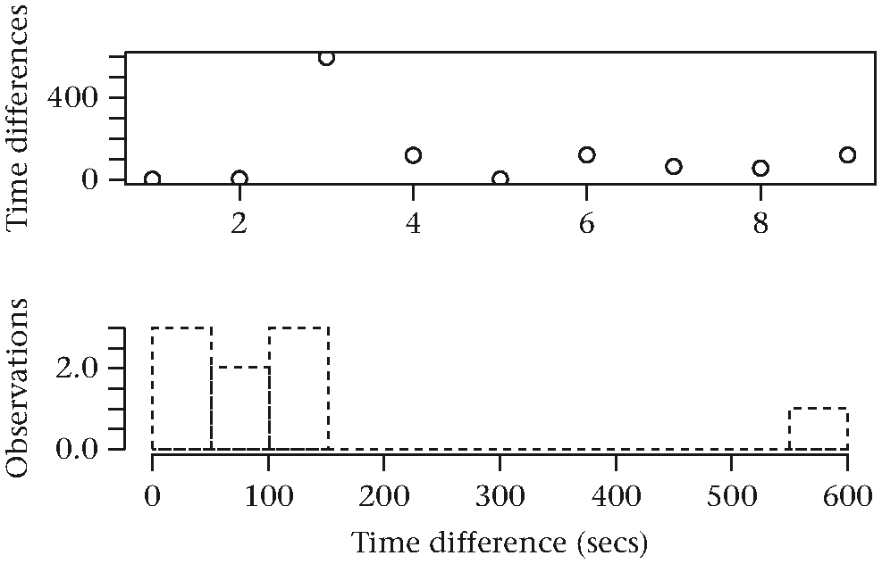
图3.9 交易时间差的图
使用quantmod包
quantmod包支持在线和离线方式访问xts格式的财务数据。除此之外，它也提供配套工具，用于绘制针对财务数据的精致图形。
从雅虎网抓取苹果股票数据的方法如下：
# 本地安装之后加载quantmod包
library(quantmod)
AAPL <- getSymbols("AAPL", auto.assign=FALSE)
head(AAPL)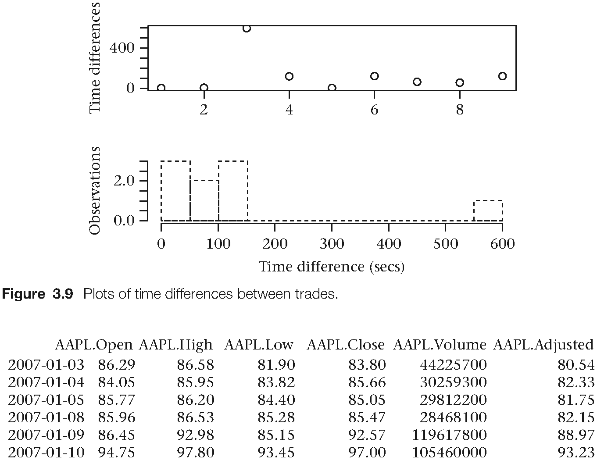
图3.10 用quantmod包生成的苹果股票AAPL数据
AAPL现在是一个xts对象，包含开盘价、最高价、最低价、收盘价、交易量和调整后的价格数据。
auto.assign 参数允许返回的对象存储在一个本地变量，而不是 R 会话的全局环境（.GlobalEnv）中。getSymbols() 的其他参数包括︰src，time，和verbose。 src参数指定输入数据的来源。它可以设置为下列信息来源之一︰
- Yahoo
- Fred
- Oanda
- mysql
- .csv files
time参数的形式为“2011/”或“2010-08-09::2010-08-12”二者之一。
quantmod包与图表
chartSeries 函数可以直接应用于开盘价、收盘价、最高价、最低价数据的xts 对象。chartSeries有很多参数可以帮助我们生成深度定制的图表。像往常一样，我们可以输入 ?chartSeries获得详细信息。使用之前创建的苹果股票价格对象，我们得到如下输出结果：
# 在原图基础上添加一些技术指标
chartSeries(AAPL, subset='2010::2010-04',
theme = chartTheme('white'),
TA = "addVo(); addBBands()")reChart() 函数用于更新原始图表，无需指定完整的一组参数︰
reChart(subset='2009-01-01::2009-03-03')quantmod 包囊括了一系列技术指标，他们可以与任何图表无缝叠加。这些技术指标来自Josh Ulrich [59]创建的TTR包。TTR 是quantmod 安装过程中自动加载的依赖包之一。
chartSeries(AAPL, subset='2011::2012', theme = chartTheme('white'), TA = "addBBands(); addDEMA()")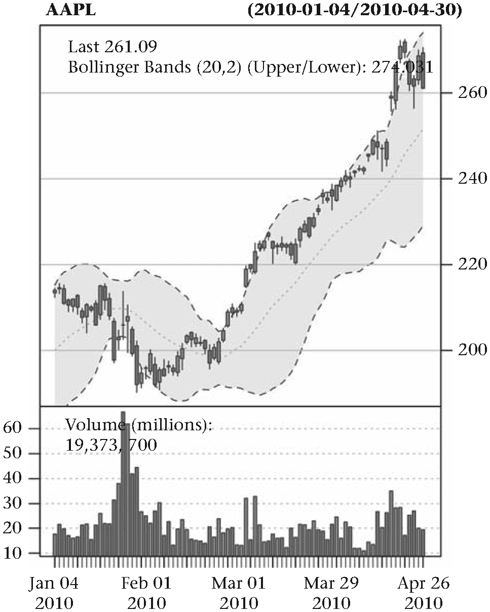
图3.11 叠加指标的股票价格chartSeries图
绘图完成以后，技术指标也可以调用下面函数来添加：
addVo()
addDPO()另外两个绝对值得研究的函数是addTA()和newTA()。它们允许用户创建的自定义指标在子图中呈现或叠加到主要的图表之上。
在下面例子中，我们首先绘制不含任何技术指标的苹果股价，然后自定义一个关于股票收盘价的指标。自定义指标简单地将 90 添加到现有的价格。当然，你可以用这种方法创建任意复杂的指标。
# 创建不包含任何技术指标的基础图
chartSeries(AAPL, theme = chartTheme('white'), TA = NULL)
# 自定义函数
my_indicator <- function(x) {
return(x + 90)
}
add_my_indicator <- newTA(FUN = my_indicator, preFUN=Cl,
legend.name = "My Fancy Indicator", on = 1)
add_my_indicator()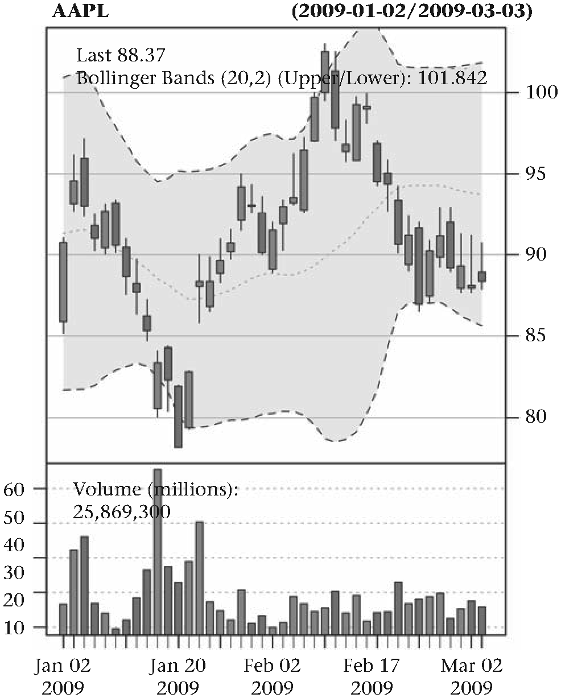
图3.12 重新绘制叠加指标的股票价格chartSeries图
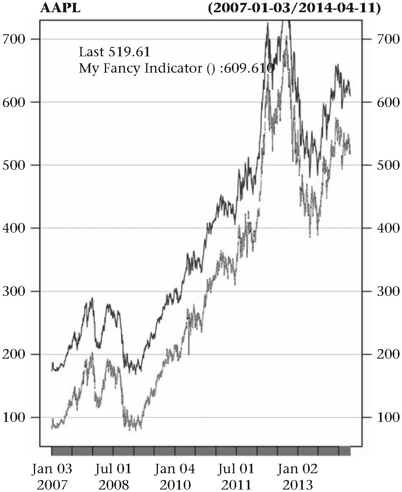
图3.13 叠加自定义指标的股票价格chartSeries图
用ggplot2包绘图
ggplot2 [40]提供了另一套好用的画图功能。包的作者也是Hadley Wickham，是到目前为止最受欢迎的 R 包之一。ggplot2 包的灵感源自Grammar of Graphics13。
为了说明ggplot2的一些功能，我们来画一下AAPL不同水平的百分比回报率的交易量分布图︰
# 创建一个包含价格和交易量的矩阵
df <- AAPL[, c("AAPL.Adjusted", "AAPL.Volume")]
names(df) <- c("price", "volume")
# 构造
df$return <- diff(log(df[, 1]))
df <- df[-1, ]接下来，我们使用cut()函数创建收益率的分组。我们对收益率的大小尤其感兴趣。下面代码演示中一共有三个分组︰
df$cuts <- cut(abs(df$return),
breaks = c(0, 0.02, 0.04, 0.25),
include.lowest = TRUE)
# 构造另外一列用来保存均值
df$means <- NA
for(i in 1:3) {
group <- which(df$cuts == i)
if(length(group) > 0) {
df$means[group] <- mean(df$volume[group])
}
} 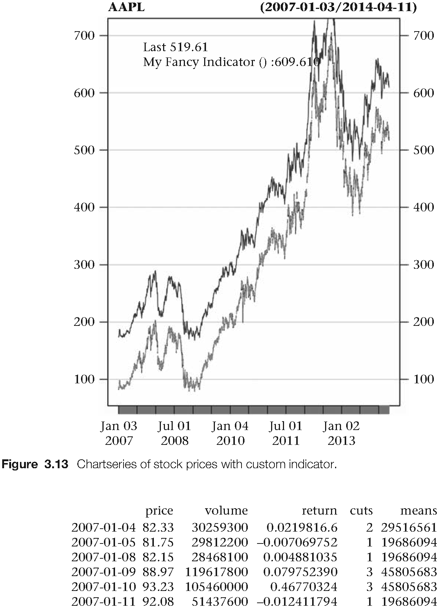
图3.14 生成cuts向量
标记为 1的分组，聚集了最低的收益率，而值为3的分组包括最高收益率。收益率的其他水平居于二者之间。我们想要画出每一分组收益率的交易量分布。
# 加载ggplot2包
library(ggplot2)
ggplot(df) +
geom_histogram(aes(x=volume)) +
facet_grid(cuts ~ .) +
geom_vline(aes(xintercept=means), linetype="dashed", size=1)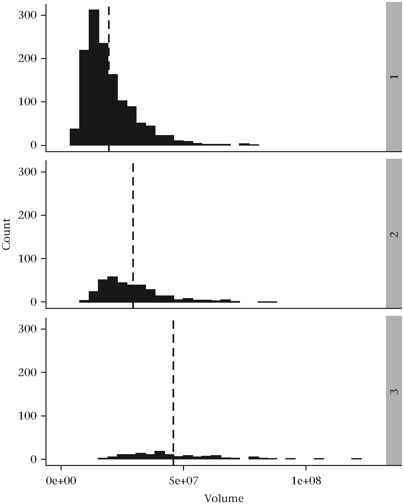
图3.15 用ggplot2绘制交易量信息
乍看之下，ggplot2 语法可能有些令人费解。aes() 指定数据呈现在x或y轴的美学属性。geom 定义需要显示的图表类型。+运算符用于将图层串联成完整的图。
想要全面了解ggplot2，可以参考Hadley Wickham的书ggplot2: Elegant Graphics for Data Analysis[40]（译者注：中译本《ggplot2:数据分析与图形艺术》已出版）
总结
本章关注一些 R 用户日常可能遇见的数据处理任务。探究了将金融价格信息导入R环境的各种方法，并说明如何对常见的文件格式 (.csv，.xml、.xls、.yaml。json)进行操作。提供了几个通过访问关系型数据库获取数据的例子。接着我们引入非常重要 xts包，以及基于时间索引的大量范例。给出了一个基于 dplyr 包进行数据操作的示例， 以及多个quantmod包和 ggplot2包的典型用例。
翻译：杨环 审校：冯凌秉